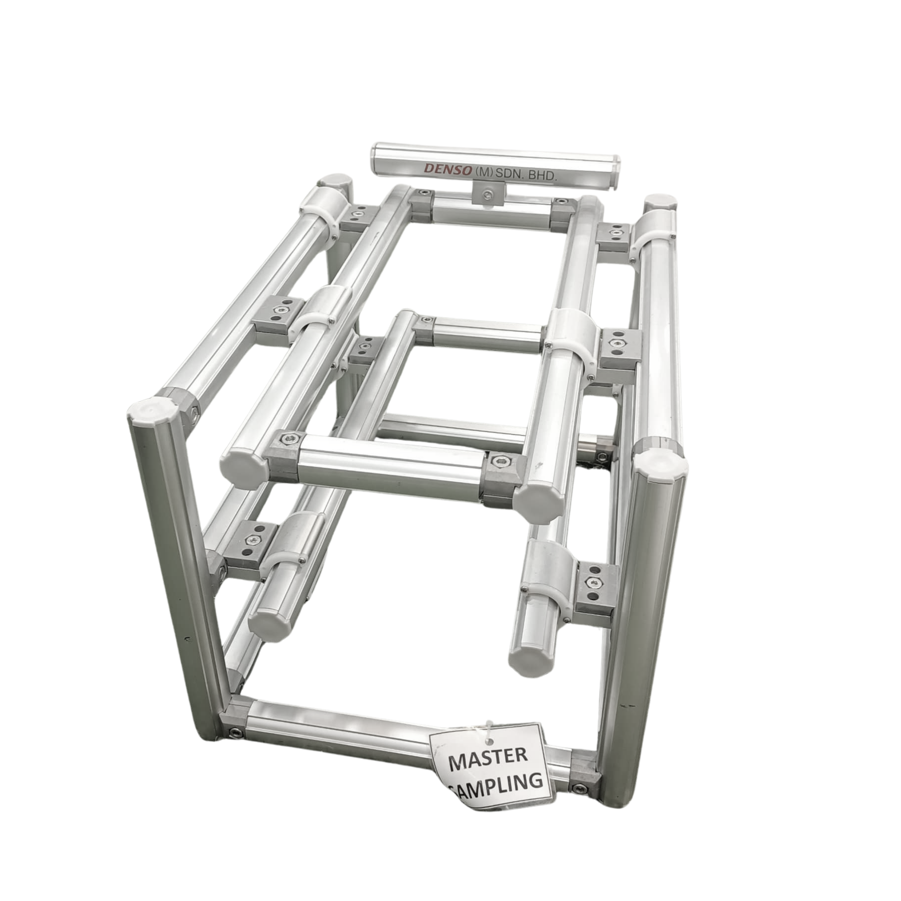

Slide Stroke Karakuri
Slide stroke mechanisms are linear-motion-based systems where an object slides along a track or guide. This mechanism is used in Karakuri to create smooth and repeatable forward-backward or up-down movements.
Slide strokes are especially helpful in tasks like pushing boxes or aligning components. They rely on manual or gravitational forces and are designed for accuracy without the need for electronics or air pressure.
Launch AR